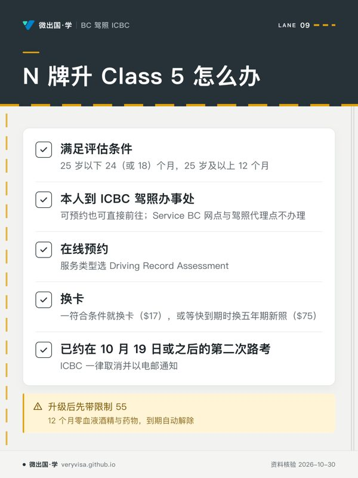

这一篇先讲一条已经生效的变化：2026 年 10 月 19 日起，N 阶段驾驶者不再考第二次路考，改为驾驶记录评估。
如果你是 N 牌，先读第二节——你不用考这场路考了。如果你是带着外国驾照来的新移民、驾照过期超过三年、或者被 RoadSafetyBC 要求复考，第三节讲的就是你要考的那场 Class 5 路考。
论坛详解与官方来源：查看同题说明、适用条件和官方原文。
一、原理与设计逻辑：第二次路考原来在做什么，以及为什么可以不做
它原本要回答的问题
分级驾照的三级台阶里，第一次路考验的是「你能不能独自上路」，第二次路考原本要验的是「独自开了两年之后，你的习惯有没有变坏」。
这是个真问题。新手在监督下养成的规范动作，独自驾驶两年后常常松掉——肩查省了，跟车距离缩了，学校区不减速了。第二次路考是一道回访检查。
为什么现在可以用记录代替
ICBC 换掉它的理由，本质是一个信息效率的判断：
一次四十分钟的抽样，未必比二十四个月的完整记录更能说明问题。
第二次路考只能观察到一段路上的一次表现；而驾驶记录覆盖的是整段 N 阶段里的所有违规、事故与禁驾。就「习惯有没有变坏」这个问题而言，后者的证据强度更高，且不受考试当天状态、路线难度、考官差异的干扰。
ICBC 自己给出的第二个理由是可及性：路考名额在乡村、偏远与原住民社区本来就稀缺，一场强制考试在那里是实打实的门槛。原话是要「降低取得驾照的门槛，尤其是对乡村、偏远和原住民社区的驾驶者」。
代价与取舍
这个改动也有代价，值得如实说：记录只能看见「被抓到的事」。一个从未被开过罚单、但习惯已经很差的驾驶者，会顺利通过记录评估——而路考有机会当场发现他。
制度用两样东西对冲：一是把评估门槛设得较严（任何严重超速或电子设备类定罪、任何禁驾都出局），二是升级后仍附加12 个月的限制期。
二、N 牌驾驶者：驾驶记录评估
门槛
| 条件 | 要求 |
|---|---|
| 25 岁以下 | 24 个月安全驾驶；若在 L 阶段完成了 ICBC 认可的 GLP 课程，则为 18 个月 |
| 25 岁及以上 | 12 个月安全驾驶 |
| 违规 | 期间无严重超速（excessive speed）或使用电子设备类定罪（严重超速是一类单独的违规，不是任何一张超速罚单） |
| 禁驾 | 期间无禁驾或吊销 |
注意那条容易被忽略的细则：课程报了名但没读完，仍按 24 个月算。
25 岁及以上只要 12 个月，是这次改动里对新移民与大龄新手最实惠的一条——它把等待期直接砍掉一半。
怎么办理
- 达标后须本人到 ICBC 驾照办事处办理，可预约也可直接前往；
- Service BC 网点与驾照代理点不办理；
- 在线预约时服务类型选 Driving Record Assessment；
- 可以一符合条件就换卡（$17），也可以等驾照快到期时再换发五年期新照（$75），由自己选。
升级后的 12 个月限制（限制 55）
评估通过后拿到的是「带限制的 Class 5」，不是马上没有任何限制的驾照：
- 驾照加上限制 55：驾驶时零血液酒精、零血液药物；
- 期限 12 个月，到期日印在驾照背面，到期自动解除，不用另办手续、不用换卡；
- 期间被禁驾或吊销，12 个月从恢复驾照之日重新计算。
10 月 19 日那天发生了什么
- 已约在 10 月 19 日或之后的第二次路考，ICBC 一律取消并以电邮通知；
- 事先收到 ICBC 确认信、被确认有资格的人，当天一次性自动升级到带限制 55 的 Class 5，不用申请。想要一张写着 Class 5 的实体卡可到办事处付 $17 换卡；
- 没收到信的人，满足条件后照常做驾驶记录评估。
三、还要考 Class 5 路考的人
谁要考
ICBC 现行页列了三种情形：
- 持特定国家的驾照迁入 BC（不在互认名单上的地区，例如中国大陆；详见换照那一篇）；
- 驾照过期超过三年；
- 参加 RoadSafetyBC 要求的复考（该复考免费）。
费用
| 项目 | 金额 |
|---|---|
| Class 5、6 路考 | $50 |
| 未提前 48 小时取消 | $25 |
| 65 岁以上 | 免费 |
| RoadSafetyBC 发起的复考 | 免费 |
费用页另有一行注记：「这些费用仅为路考本身，可能另需缴纳牌照费。」每次考都要交一次考试费。
考什么
ICBC《Get your full licence》页写明，路考连同考后讲评约 40 分钟（Class 7 约 35 分钟），流程是：
- 开场车检：考官检查车辆，并要你指出喇叭、手刹、远光灯、转向灯等的位置，还要演示转弯手势。车不安全就考不成；
- 路线：考官按预定路线带你走，可能包括市区街道、商业区与高速公路，会经过无标志路口、停车标志路口和有信号灯的大路口；要转弯或变道时会提前告诉你；
- 危险感知：考官可能要你指出路上的潜在危险。
页面列出的常考技能：通过路口（含左右转）、汇入车流、靠边停车、变道、坡道停车与坡道起步、倒车、泊车（斜位、平行、车位前进与倒入）、两点与三点掉头、进出高速公路、一般驾驶（直行、坡道与弯道）、遇紧急车辆的处置。官方说明不是每项都会考到。
所以高速公路进出匝道在 Class 5 路考里是官方点名的技能，路线也可能上高速——准备时要专门练汇入与驶离。
结果与重考
- 考完当场知道结果，考官会对照纸本成绩单背面的「技能说明」（Skills Explainer）圈出要改进的地方。说明单是英文的，ICBC 网站提供简体中文对照版；
- 讲评时英语不便的人可以带人翻译，但翻译不能上车；
- 没通过：第一次挂后 14 天才能再考，第二次挂后 30 天，第三次及以上 60 天——14 天、30 天、60 天递增，每次都交考试费；
- 新移民注意：换照时原驾照要交回 ICBC；路考没过会拿到一张 BC 学习驾照，原驾照不退还。ICBC 建议考试当天带一名合格驾驶者同行，以防没过时没法自己开车回去。
评分方式
考官评估的是安全驾驶与车辆控制，未公布分数线，也未公布自动挂科清单。ICBC 的说法是考官「不会设陷阱，也不会要求你做违法或不安全的动作」。
四、历史变迁
| 时间 | 变动 |
|---|---|
| GLP 制度启动 | 按 ICBC 自述已运行二十五年以上 |
| 2026-10-19 | 第二次（Class 5）路考对 N 阶段驾驶者取消，改为驾驶记录评估；收到 ICBC 确认信者当天一次性自动升级；这两种方式升级后都带 12 个月限制 55 |
| 2026-10-19 | Class 7／8 路考费 $35 → $50（Class 5／6 仍为 $50） |
| 2026 版 | 《Tuning up for drivers》现行版，法律状态截至 2026-03-30 |
在这之前，每个 N 驾驶者都要在 N 满 24 个月（读完认可课程 18 个月）后考 Class 5 路考才能拿到全照。现在这场考试只留给上面第三节那三类人。
五、边学边测
{{quiz:drv-0405,drv-0402,drv-0404,drv-0408,drv-0401,drv-0407}}
六、核心术语双语表
| 中文 | English | 说明 |
|---|---|---|
| 第二次路考 | Second road test | 2026-10-19 起对 N 阶段驾驶者取消 |
| 驾驶记录评估 | Driving Record Assessment | 取代第二次路考 |
| 带限制的 Class 5 | Class 5 licence with restrictions | 评估通过后的 12 个月状态（限制 55） |
| 限制期 | Restriction period | 升级后 12 个月，零酒精零药物；期间禁驾或吊销则重新计算 |
| 安全驾驶期 | Safe driving period | 24／18／12 个月三档 |
| 严重超速 | Excessive speed | 一类单独的违规，不是任何一张超速罚单；出现即不符合评估条件 |
| 车检 | Pre-trip check | 路考开场，含指认车辆部件与转弯手势 |
| 技能说明单 | Skills Explainer | 成绩单背面，考官圈出待改进技能 |
| 驾驶者复考 | Driver re-exam | 由 RoadSafetyBC 发起，免费 |
| 认可培训课程 | ICBC-approved (GLP) course | 报名但未读完不算 |
七、来源清单
均为 2026-10-30 复核的 ICBC 现行页面。
- ICBC《Changes to the Graduated Licensing Program》——驾驶记录评估门槛、办理方式、改革理由
- ICBC《You have a Class 7 licence and you're under 25》《You hold a Class 7 licence and you're 25 or older》——限制 55 的内容、12 个月期限与重新计算规则
- ICBC《You may have been eligible for an automatic upgrade》——10-19 一次性自动升级与换卡
- ICBC《Get your full licence》——带限制 Class 5 的资格；Class 5 路考的三类考生、约 40 分钟、车检与转弯手势、路线含高速、技能清单、技能说明单、重考等待 14／30／60 天
- ICBC《Moving from outside Canada》——交回原驾照、路考未过发学习驾照
- ICBC《Fees》——Class 5／6 路考 $50、$25 取消费、复考免费、「仅为路考本身」注记
- ICBC《Tuning up for drivers》2026 版——备考单元与考官提示
本页知识卡
不看正文也能拿到这一节的核心内容：先看导读，再看图。点图放大，左右翻页。
- 先看先看右栏：每一格都能在 ICBC 现行页上找到原话。
- 易漏高速公路进出匝道是点名技能，不是坊间传说。
- 下一步去练习，再按技能清单把汇入与驶离高速练到。

- 先看先核对自己的年龄档和月数，再看办理地点。
- 易漏Service BC 网点与驾照代理点不办；评估通过后还有 12 个月限制 55。
- 下一步去练习，把年龄、月数和记录换成具体情境再判断。